SCIENCE & CULTURE EXHIBITION
中国古代科学技术
星河万古，一脉长流 · 科技文化系列活动
人文学院与图书馆联合开展科技文化活动，包含图书展、花间读书节文化体验与中国科学技术馆研学。我主要负责统筹并参与展板设计，与团队共同完成展览视觉呈现，同时参与后续活动报道与影像记录。
01我的工作
统筹并参与展板设计
统筹展板设计工作，与团队共同将科技史内容转化为便于阅读的展览版面，并参与配图、文字与版式的设计调整。
多轮修改与现场沟通
保留多版设计和修改说明，配合检查术语、图注与数字表述；与图书馆沟通现场布置及活动流程。
图文与影像记录
撰写系列活动总结报道，并剪辑活动视频，把展览、传统技艺体验和研学内容组织为完整记录。
02项目成果
21张
本次展示展板（含导言）
7版
答辩材料记载的修改
3个
系列活动板块
本页展示“科普展版6.0”中的21张展板（含导言）及1张主题背景。本人统筹并参与设计，展板为团队协作成果。报道署名文字、剪辑为冯子慧；视频拍摄为马欣婕、马艺丹。
03作品与记录
全套展板按编号排列，附主题背景。点击图片可放大查看文字细节。
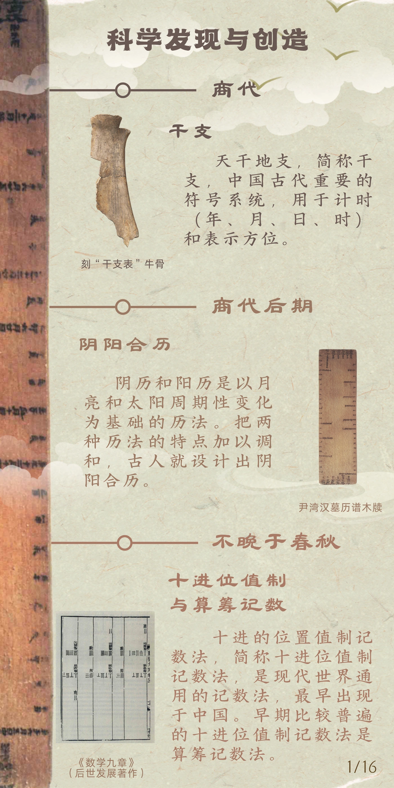
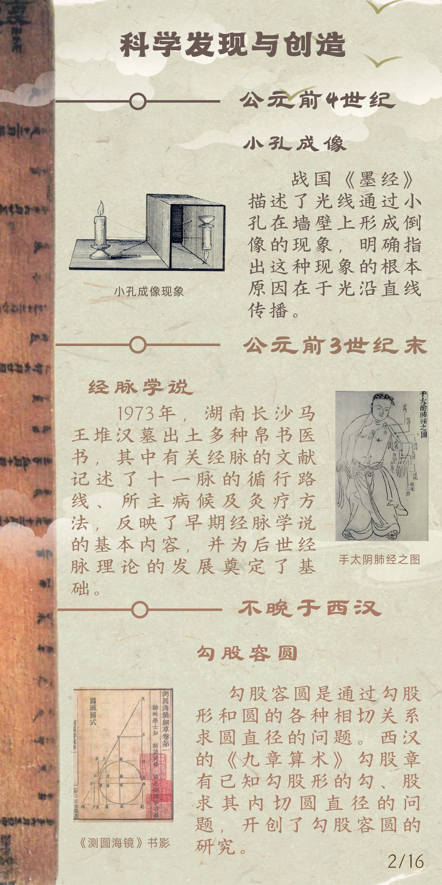
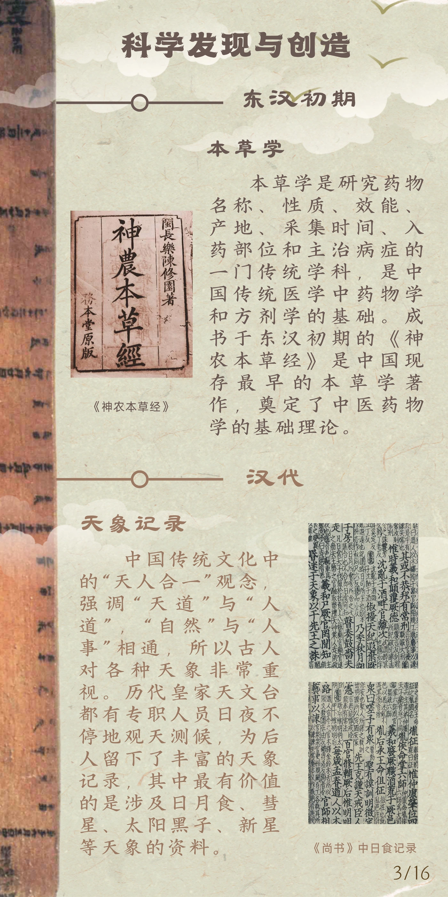
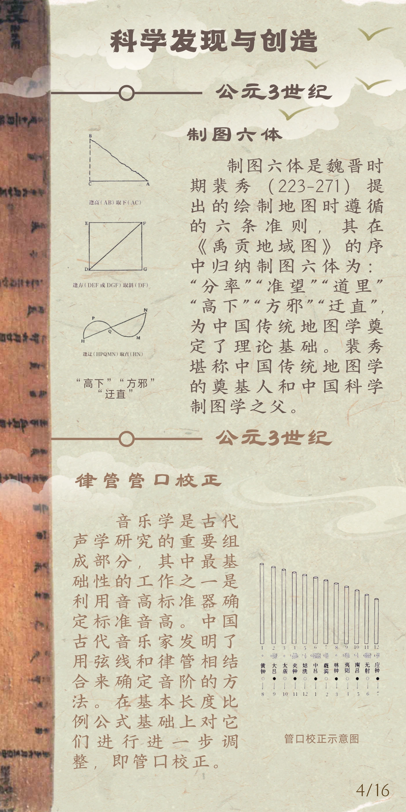
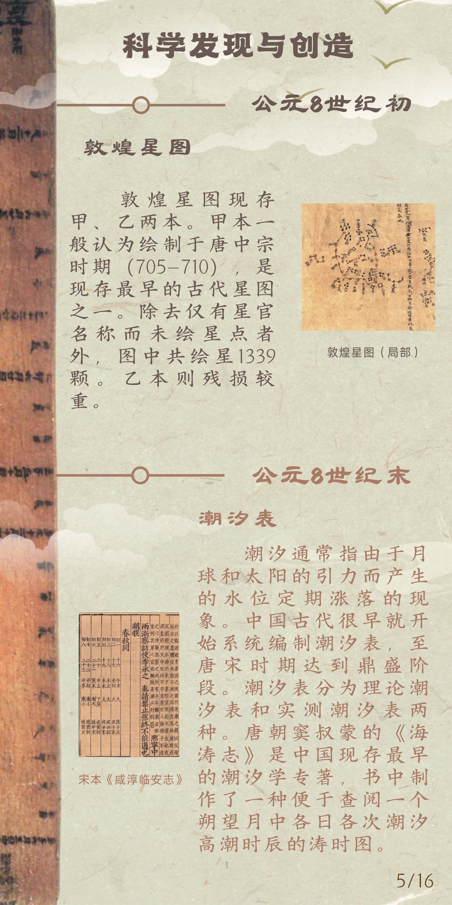
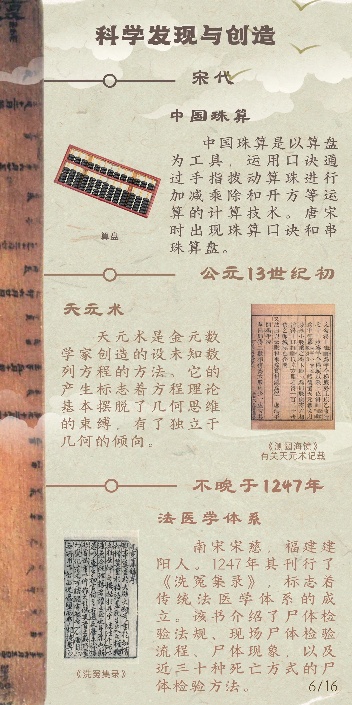
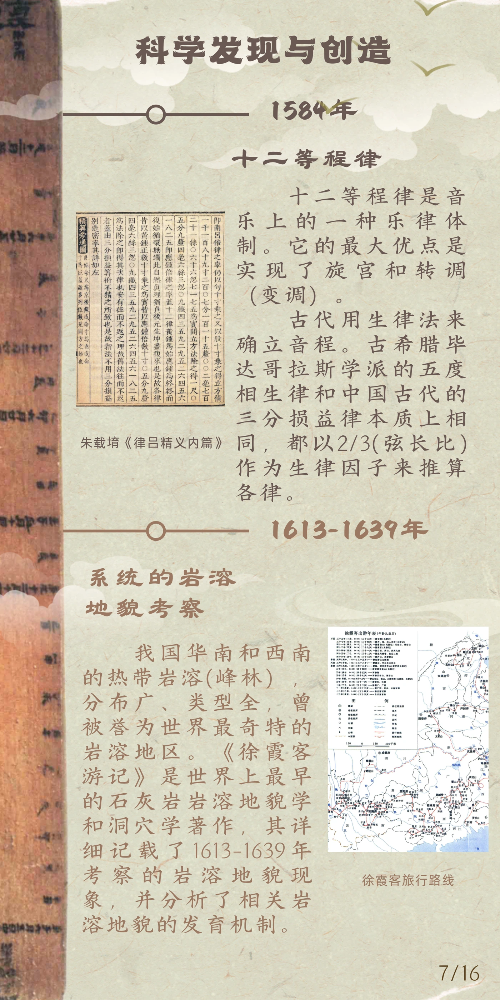
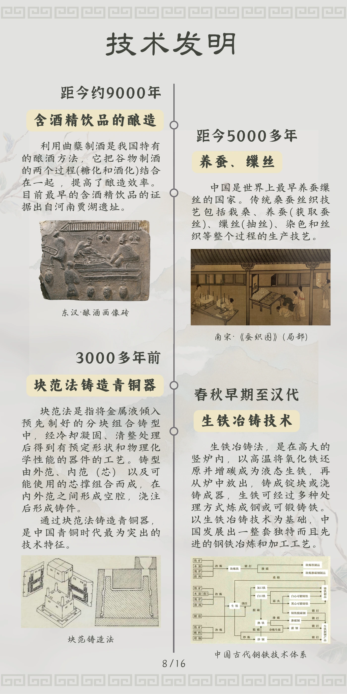
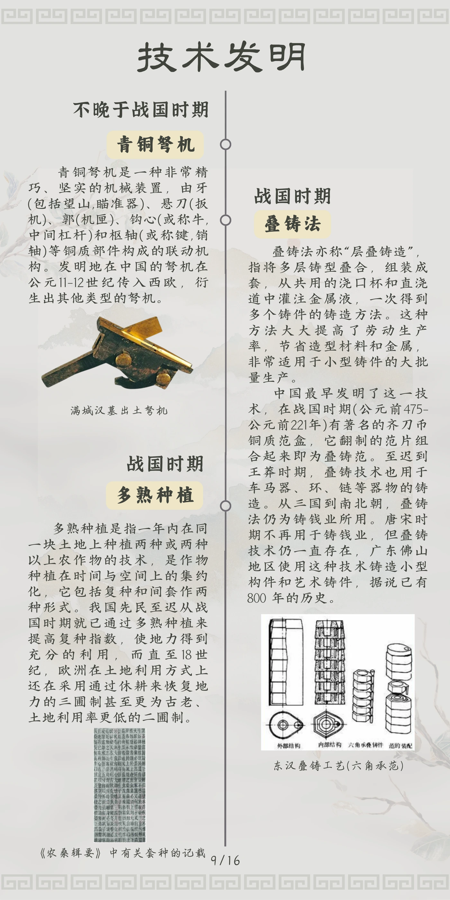
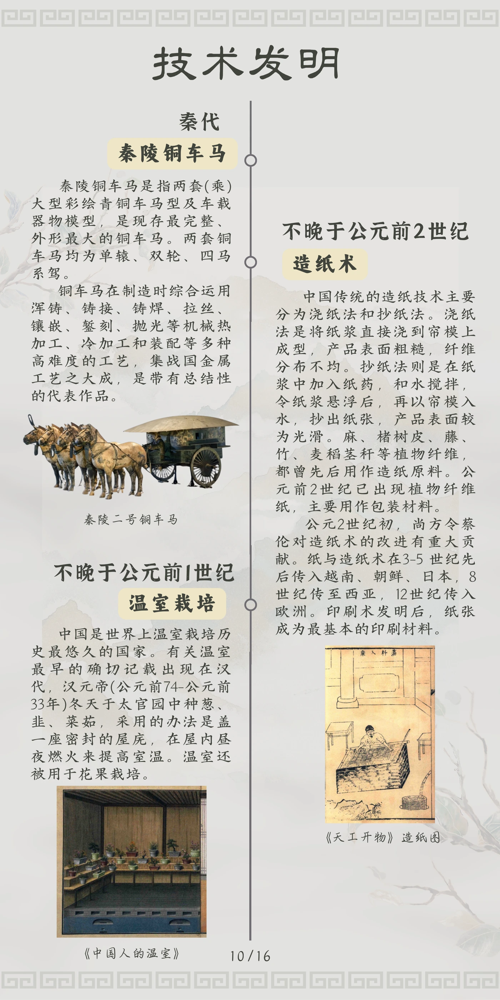
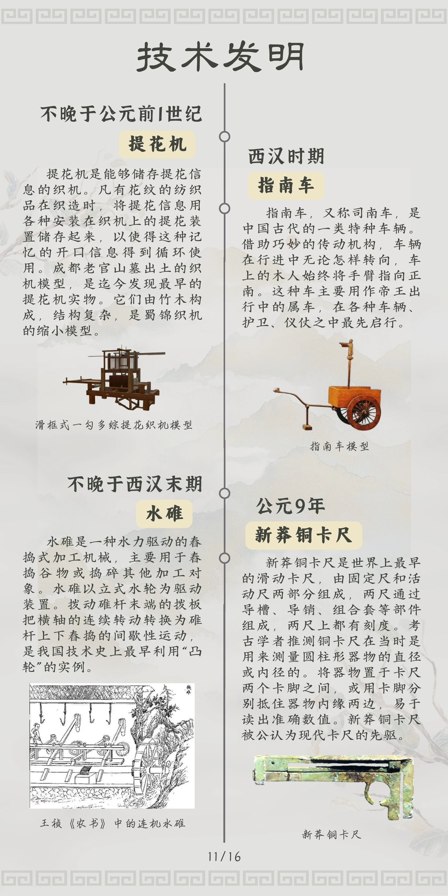
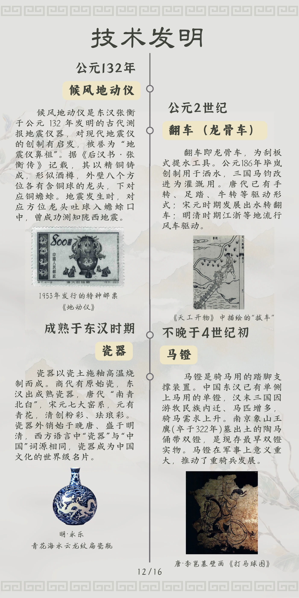
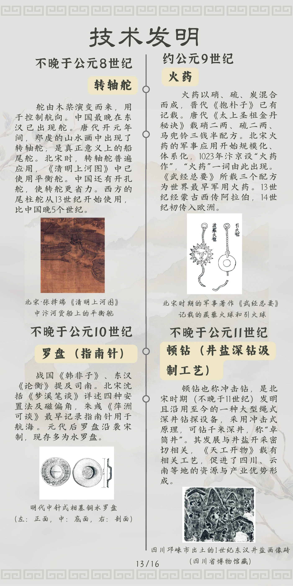
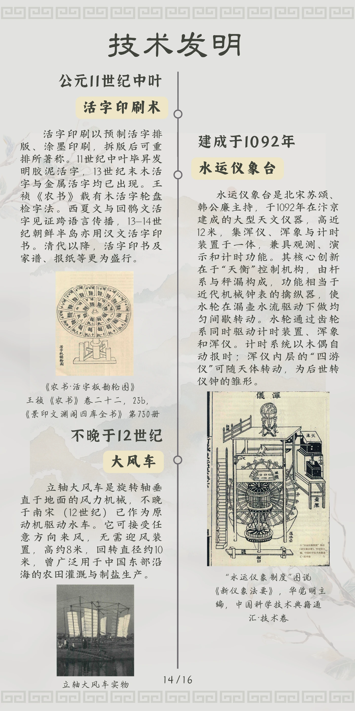
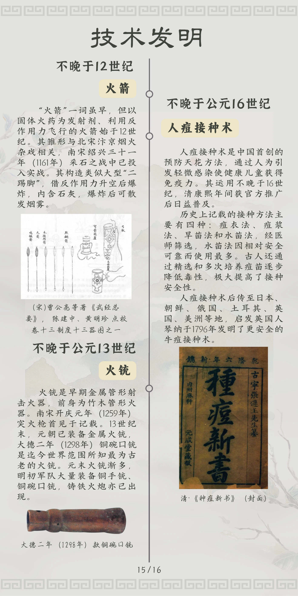
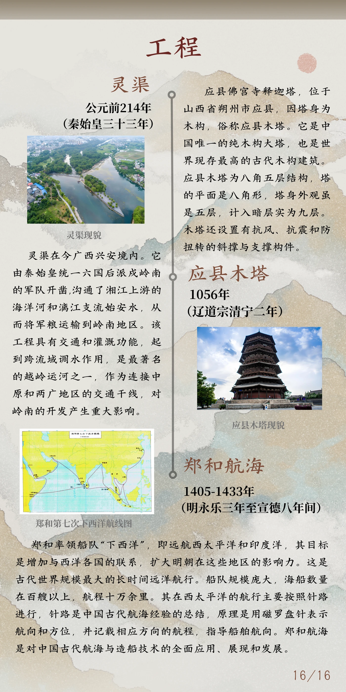
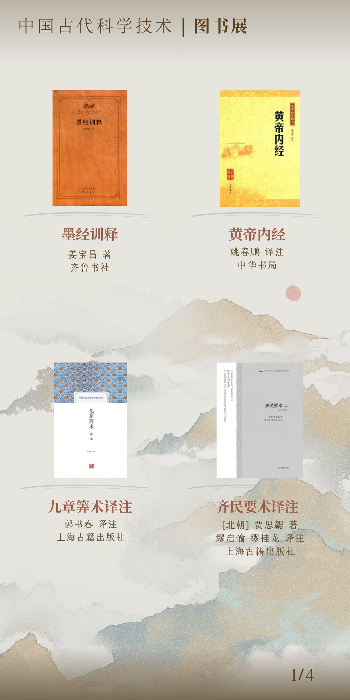
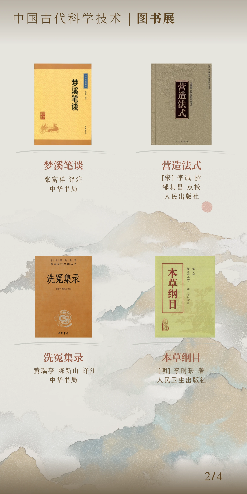
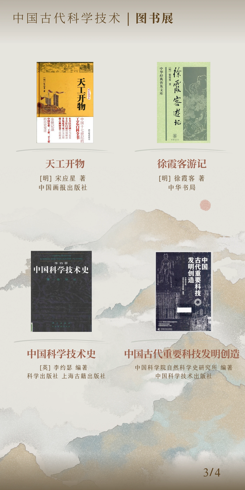
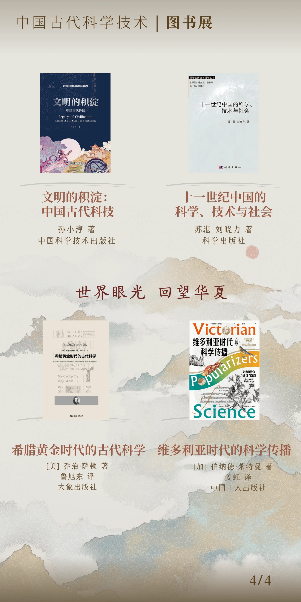
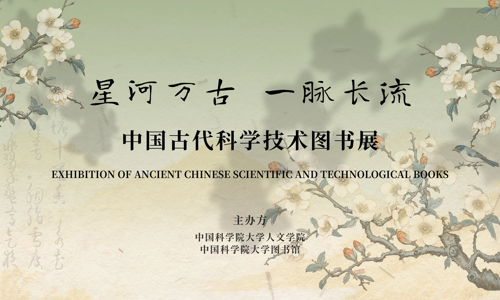
剪辑：冯子慧 / 拍摄：马欣婕、马艺丹
04活动推文
活动预告微信公众号 ↗活动报道微信公众号 ↗05经验总结
科普展板需要同时考虑内容准确与现场阅读。多轮修改中，文字、图片和注释应放在一起核对，设计才能真正服务于知识的理解。